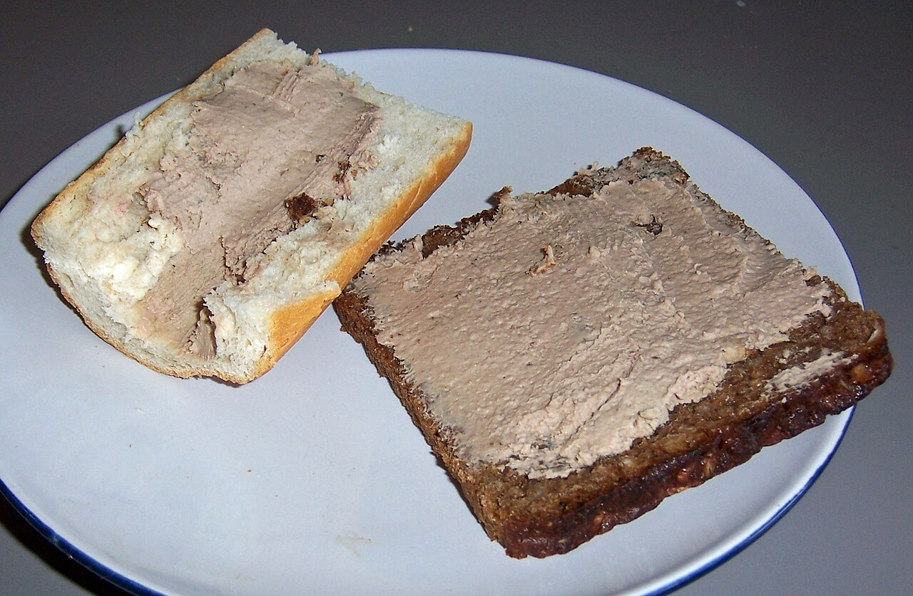
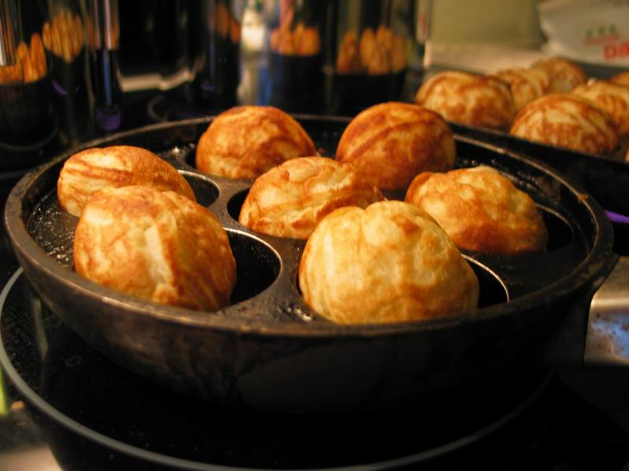

Keturių dienų kelionė į Kopenhagą – kompaktiška, viskas pasiekiama pėsčiomis arba metro, automobilio nuomoti nereikia. Gyvensime Christianshavn rajono apartamentuose, iš kurių lengva pasiekti ir senamiestį, ir Royal Areną.
1 diena skirta klasikiniams Kopenhagos vaizdams (Nyhavn, Amalienborgas, Rosenborgas), 2 diena – Christianijai, muziejams ir Tivoli parkui helovino nuotaikoje, 3 diena – kanalų ekskursijai, Torvehallerne turgui ir Deep Purple koncertui Royal Arenoje, 4 diena – ramus atsisveikinimas su Christianshavn prieš skrydį namo.
Žemėlapis
1 diena – Atvykimas ir Kopenhagos klasika
Kopenhagos oro uostas (CPH)
Nusileidus – bagažo atsiėmimas, pasas/muitinė nereikalingi (Šengeno erdvė). Į miestą važiuokite metro M2 linija, stotelė tiesiai terminale.

Autorius: kallerna · CC BY-SA 4.0 · šaltinis
Apartamentai Saint-Nice (Christianshavn)
Palikite lagaminus – kambariai gali būti dar neparuošti prieš 15:00, bet daiktus priimti leidžiama iš anksto. Christianshavn metro stotelė – 3 min pėsčiomis.

Autorius: Arild Vågen · CC BY-SA 4.0 · šaltinis
Nyhavn kanalas
Spalvoti namukai ir senoviniai buriniai laivai – klasikinė Kopenhagos nuotrauka. Geriausia šviesa ryte, kol dar nėra minios.

Autorius: Dietmar Rabich · CC BY-SA 4.0 · šaltinis
Amalienborgo pilis (sargybos keitimasis)
Sargybos keitimasis vyksta apie 12:00 – atėję truputį anksčiau užimsite gerą vietą prie aikštės. Įėjimas į kiemą nemokamas.

Autorius: Daderot · CC0 · šaltinis
Ida Davidsen – pietūs 🍴
Garsus smėrrebrėdo restoranas, žinomas nuo 1888 m. – paklauskite dienos pasiūlymų, dažnai pigiau nei meniu kaina.
Legendinis restoranas – paklauskite dienos pasiūlymo, jis būna pigesnis nei meniu kainos.
Žemėlapyje

Autorius: User:Nillerdk · CC BY-SA 3.0 · šaltinis
Rosenborgo pilis ir Karaliaus sodas
Viduje – karūnos brangenybės, lauke – gražus parkas pasivaikščioti. Jei lyja, laiką galima praleisti vien pilyje.

Autorius: Marco Almbauer · CC0 · šaltinis
Torvehallerne prekyvietė
Uždara prekyvietė su vietos gėrybėmis, sūriais, kava ir kepiniais – gera vieta užkandžiams parsivežti į vakarą arba dienos pabaigos kavai.

Autorius: Jorge Franganillo · CC BY 2.0 · šaltinis
2 diena – Christiania, muziejai ir Tivoli
Laisvasis miestas Christiania
Alternatyvaus gyvenimo būdo kvartalas su gatvės menu ir dirbtuvėmis – geriausia lankytis ryte, kol rami atmosfera. Nuotraukas daryti tik ne „Žaliojoje šviesoje“ (Pusher Street) – vietiniai to nemėgsta.

Autorius: Neptuul · CC BY-SA 4.0 · šaltinis
Ny Carlsberg Glyptotek
Puiki vieta lietingam orui – stiklinis žieminis sodas su palmėmis ir senovės meno kolekcija. Neskubėkite prie skulptūrų salės po stogu.

Autorius: Richard Mortel from Riyadh, Saudi Arabia · CC BY 2.0 · šaltinis
Slotskælderen hos Gitte Kik – pietūs 🍴
Tradicinis, jaukus smėrrebrėdo restoranėlis netoli Christiansborg – populiarus tarp vietinių, verta atvykti tiksliai pietų metu.
Geriausia atvykti tiksliai pietų metu, kol dar yra vietų.
Žemėlapyje

Autorius: Kritzolina · CC BY-SA 4.0 · šaltinis
Danijos nacionalinis muziejus
Nemokamas įėjimas – vikingų salė ir bronzos amžiaus „Saulės vežimas“ verti dėmesio. Gerai tinka lietingam popiečiui.

Autorius: Dietmar Rabich · CC BY-SA 4.0 · šaltinis
Tivoli parkas (Helovino sezonas)
Spalio mėnesį parkas papuoštas tūkstančiais moliūgų ir apšviestas – gražiausia atmosfera temstant (apie 17:30–18:00). Viduje daug uždarų kavinių, jei atšąla ar palyja.

Autorius: Johan Wessman / News Oresund · CC BY 2.0 · šaltinis
3 diena – Kanalų kelionė, Torvehallerne ir Deep Purple koncertas
Kanalų ekskursija laivu (Nyhavn prieplauka)
Žiemą plaukiojama uždaromis, šildomomis valtimis – malonu net vėsią rudens dieną. Apžvelgsite miestą iš vandens per ~55 min.

Autorius: Olga Itenberg · CC BY 2.0 · šaltinis
Torvehallerne (apsipirkimas)
Pasivaikščiokite tarp prekystalių, paragaukite vietinių sūrių ar kavos, kol artėja pietų metas.
Torvehallerne (pietūs) 🍴
Rinkitės bet kurį iš daugybės maisto stalelių – nuo šviežios žuvies iki naujosios danų virtuvės. Po pietų grįžkite į Christianshavn pailsėti prieš vakaro koncertą, nes sutemsta jau apie 16:30.
Dešimtys maisto stalelių nuo šviežios žuvies iki naujosios danų virtuvės.
Žemėlapyje
Royal Arena – Deep Purple koncertas 🎸
Durys atsidaro 18:00. Važiuokite metro tiesiai iki Ørestad stotelės. Po koncerto grįžtant patariama eiti link Vestamager stotelės – ten paprastai mažiau žmonių nei prie Ørestad.

Autorius: Jenny Andersson / News Oresund · CC BY 2.0 · šaltinis
4 diena – Atsisveikinimas su Christianshavn ir skrydis namo
Café Wilder – pusryčiai 🍴
Jauki vietinė kavinė Christianshavn rajone, mėgstama vietinių pusryčiams – gera vieta ramiai atsisveikinti su kvartalu.
Gera vieta ramiai atsisveikinti su kvartalu prieš skrydį.
Žemėlapyje

Autorius: Dietmar Rabich · CC BY-SA 4.0 · šaltinis
Christianshavn kanalai (paskutinis pasivaikščiojimas)
Trumpas pasivaikščiojimas palei kanalus ir senus laivus prieš grįžtant susikrauti lagaminų. Rytą šviesa švelni – geras metas paskutinėms nuotraukoms.

Autorius: Jakub Hałun · CC BY-SA 4.0 · šaltinis
Apartamentai Saint-Nice (bagažo pasiėmimas ir išsiregistravimas)
Pasiimkite lagaminus ir atsiskaitykite su apartamentais. Iš čia iki oro uosto metro M2 linija (Christianshavn stotelė – 3 min pėsčiomis) trunka apie 20 min.
Kopenhagos oro uostas (CPH)
Atvykus 13:00 val. liks pakankamai laiko bagažo registracijai ir saugumo patikrai prieš 15:15 skrydį. Metro stotelė yra tiesiai terminale.
Autorius: kallerna · CC BY-SA 4.0 · šaltinis
💡 Praktiniai patarimai
- Kopenhaga yra plokščia ir visi keliai tarp lankomų vietų asfaltuoti – puikus miestas vaikščioti pėsčiomis arba važiuoti metro, be jokių bekelės staigmenų.
- Kelionė iš oro uosto (CPH) į Christianshavn apartamentus (ir atgal) metro M2 linija trunka apie 20 minučių be persėdimų.
- Po Deep Purple koncerto Royal Arenoje grįžtant metro verta eiti iki Vestamager stotelės, o ne Ørestad – ten paprastai mažiau žmonių.
Biudžetas
4 keliautojai, 3 naktys, automobilis nenuomojamas.
| Kategorija | Min | Tikėtina | Maks |
|---|---|---|---|
| ✈️ Skrydžiai (KUN↔CPH, 4 žm.) | 380 € | 411 € | 600 € |
| 🚗 Automobilio nuoma | 0 € | 0 € | 0 € |
| 🛏️ Nakvynė (3 naktys) | 349 € | 437 € | 930 € |
| 🍽️ Maistas (4 žm. × 4 d.) | 680 € | 824 € | 930 € |
| 🎫 Bilietai į lankytinas vietas (4 žm.) | 540 € | 620 € | 840 € |
| ⛽ Degalai | 0 € | 0 € | 0 € |
| VISO (4 žm., visa kelionė) | 1 949 € | 2 292 € | 3 300 € |
| Vienam asmeniui | 487 € | 573 € | 825 € |
- Skrydžiai: šiuo metu geriausia kaina – 411 € visai grupei lygiai tais skrydžio laikais, kurie atitinka maršrutą. Kaina gali keistis, verta rezervuoti greitai.
- Nakvynė: skaičiuota pagal ~146 €/naktis už apartamentus Christianshavn rajone.
- Maistas: suma sudėta iš konkrečių šiame plane nurodytų užeigų kainų keturiems žmonėms, plius atsarga neįtrauktiems pusryčiams ir dviem barų vizitams.
- Bilietai: didžiausią dalį sudaro Deep Purple koncerto bilietai Royal Arenoje (~76–87 €/asm. su mokesčiais) – verta patvirtinti vietų kategoriją iš anksto, nes ji labiausiai veikia šios kategorijos kainą.
- Automobilis ir degalai – tikras 0 €: visa kelionė vyksta pėsčiomis ir metro, automobilis nereikalingas.
Kur pavalgyti
1 diena
Legendinis restoranas, veikiantis nuo 1888 m. – paklauskite dienos pasiūlymo, jis būna pigesnis nei meniu kainos.
ŽemėlapyjeDaugiau nei 150 metų veikianti jauki užeiga ant kanalo kranto, mėgstama vietinių.
ŽemėlapyjePuiki vieta trumpam užkandžiui, sūriui ar kavai dienos pabaigoje.
Žemėlapyje2 diena
Tradicinis, nedidelis restoranėlis netoli Christiansborg, labai populiarus tarp vietinių.
ŽemėlapyjeJauki, nuo 1984 m. veikianti kavinė-restoranas – trijų patiekalų vakarienės rinkinys yra puiki kainos ir kokybės verte.
Žemėlapyje3 diena
Dešimtys maisto stalelių nuo šviežios žuvies iki naujosios danų virtuvės.
ŽemėlapyjeUždaras gatvės maisto turgelis prie kanalo – greita ir pigi vakarienė prieš Deep Purple koncertą.
Žemėlapyje4 diena
Jauki vietinė kavinė, mėgstama vietinių pusryčiams – gera vieta ramiai atsisveikinti su kvartalu prieš skrydį.
ŽemėlapyjeKą paragauti

Autorius: Kritzolina · CC BY-SA 4.0 · šaltinis
Smėrrebrėdas
Ant rupios ruginės duonos tiesiamas atviras sumuštinis su silke, krevetėmis, roast beef'u ar kiaušiniu su majonezu. Tikra Danijos pietų klasika.
Kepta silkė
Traškiai kepta silkė, patiekiama ant ruginės duonos su curry salotomis arba svogūnais – viena populiariausių smėrrebrėdo versijų.

Autorius: cyclonebill · CC BY-SA 2.0 · šaltinis
Danijos kotletai
Keptos kiaulienos ir jautienos faršo kotletukai su virtomis bulvėmis, raudongūžiu kopūstu ir padažu – namų virtuvės klasika.

Autorius: cyclonebill from Copenhagen, Denmark · CC BY-SA 2.0 · šaltinis
Kepta kiauliena
Traškiaodis keptas kiaulienos sprandas su bulvėmis ir raudonuoju kopūstu – tradicinis sekmadienio ir švenčių patiekalas.

Autorius: User KennethJ on en.wikipedia · CC BY-SA 3.0 · šaltinis
Kepenėlių paštetas ant ruginės duonos
Namine kepenėlių pašteto tartinė su agurkėliais ar svogūnais – paprasčiausias ir pigiausias smėrrebrėdas, kurį valgo patys danai.

Autorius: JoachimK · Public domain · šaltinis
Obuolių spurgytės
Apvalios, minkštos spurgytės, kepamos specialioje keptuvėje, patiekiamos su uogiene ir cukraus pudra – spalio–gruodžio mėnesiais ypač populiarus užkandis turguose.

Autorius: Peter Isotalo · CC BY-SA 3.0 · šaltinis
Danų keksiukas
Sluoksniuotos tešlos keksiukas su glaistu, cinamonu ar vaisių įdaru – geriausia valgyti šviežią su kava ryte.
Praktinė informacija
- Skrydis į Kopenhagą
- 2026-10-23, atvykimas CPH 09:40
- Skrydis namo
- 2026-10-26, išvykimas iš CPH 15:15 (atvykti į oro uostą iki 13:00)
- Nakvynė
- Apartamentai Saint-Nice, Christianshavn – 3 naktys
- Automobilis
- Nenuomojamas – visa kelionė pėsčiomis ir metro
- Kelionės vadovo kontaktas
- [vardas, tel. nr.]
- Apartamentų kontaktas
- [tel. nr. / el. paštas]